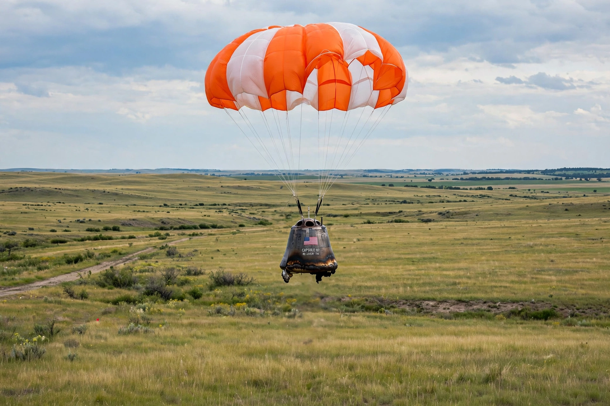

Shenzhou 5
From Wikipedia, the free encyclopedia
| Shenzhou 5 | |
|---|---|
| Crew | Yang Liwei |
| Launch | 15 October 2003, Jiuquan |
| Duration | 21 hours 23 minutes, 14 orbits |
| Significance | China's first crewed spaceflight |

Shenzhou 5 returns.Shenzhou 5 was the first crewed mission of China's Shenzhou programme, flown on 15 October 2003 by Yang Liwei aboard a Long March 2F from Jiuquan. The 21-hour, 14-orbit flight made China only the third nation to launch humans into space independently — forty-two years after Yuri Gagarin — and turned Yang into a national hero of Gagarin's stature in China.
The flight was cautious by design: one crew member, one day, a proven-profile mission after four uncrewed Shenzhou tests, with a landing on the Inner Mongolian steppe. Yang reported a troubling low-frequency vibration during ascent (later engineered out) and, famously, could not confirm seeing the Great Wall — politely retiring that myth. State television broadcast little live, but the mission's success anchored China's methodical build-out: spacewalk (2008), stations (2011–), and the Tiangong space station era.
Aftermath
Yang never flew again — like Gagarin, too valuable to risk — becoming a senior programme official. Shenzhou 5's capsule is displayed in Beijing; its flight suit and flag became relics of the state. The next crewed flight, Shenzhou 6 in 2005, flew two men for five days, confirming the template: deliberate, incremental, unstoppable.
See also
Yang Liwei · Shenzhou (spacecraft) · China Manned Space Agency · Tiangong space station